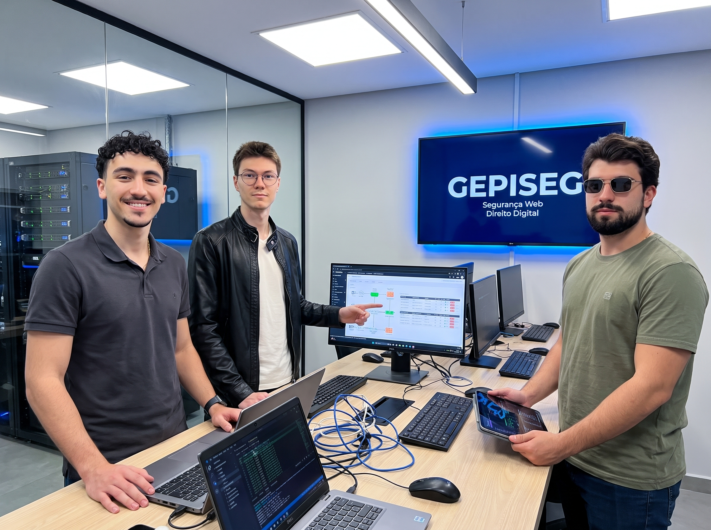

GEPISEG
Grupo de Pesquisa Interdisciplinar em Segurança Web
Sobre o grupo
O GEPISEG, Grupo de Pesquisa Interdisciplinar em Segurança Web, reúne pesquisadores de áreas como computação, direito digital e educação para estudar como proteger aplicações, dados e pessoas na internet. Desde a sua criação, o grupo investiga temas como vulnerabilidades em sistemas web, engenharia social, privacidade e conscientização digital.
Nossa produção inclui artigos científicos, projetos de extensão e materiais de apoio que aproximam a pesquisa acadêmica da sociedade. O objetivo é formar uma comunidade mais atenta aos riscos online e preparada para construir uma web mais segura. Este portal reúne os artigos e os pesquisadores do grupo.

Nossas metas
Ao longo da sua trajetória, o GEPISEG já publicou mais de 30 artigos científicos em eventos e periódicos da área, formou uma equipe com 12 pesquisadores de diferentes áreas e realizou oficinas de conscientização sobre segurança digital em escolas e comunidades. O grupo também firmou parcerias com instituições de ensino para o desenvolvimento de projetos de extensão.
Para os próximos anos, o grupo pretende ampliar a produção científica com foco em inteligência artificial aplicada à segurança, criar um laboratório aberto para testes de segurança em aplicações web e lançar um curso gratuito de segurança web para estudantes e profissionais. Também está nos planos estabelecer parcerias internacionais de pesquisa.